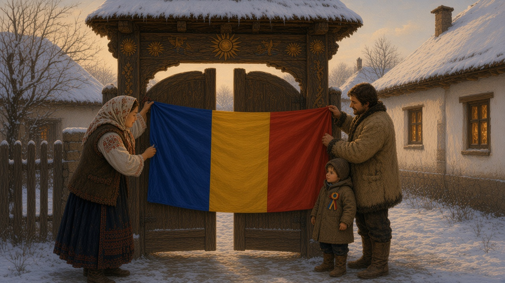
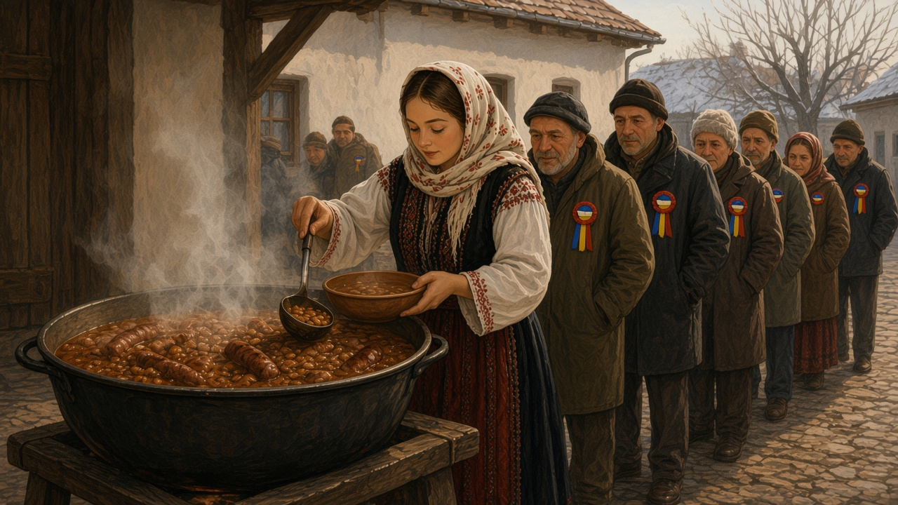

1 Decembrie
The first of December. The assembly at Alba Iulia in 1918, the flag on the gate, and a pot of beans in the square.

The assembly
The day the country keeps is the first of December. What it marks is an assembly, not a battle. On that date in 1918, at Alba Iulia, Romanian delegates from Transylvania voted union with the kingdom. The same vote took in the Banat and the other lands those delegates had come from. Bessarabia and Bukovina had already voted their own unions earlier that year. This page does not retell the war. The stages — 1859, then 1918, then the arguments about the edges — sit on how the country was put together and on borders.
The delegates met in the hall the citadel still calls the Sala Unirii, the Union Hall. The people who had walked in stood outside. The resolution carried both dates, the old calendar and the new one. The day the country prints now is the first of December. People say Marea Unire, the Great Union. A kitchen cannot settle the speeches from here, and this page will not try. The fact that travels is the place and the vote: Alba Iulia, Transylvania, that morning.
The flag
Drapelul, the flag. Blue, yellow, and red, in that order, the vertical bands. On the first of December it comes out on balconies and on gates. A town flat uses the rail. A village uses the poartă, the carved gate, if the house still has one — that threshold is on gates. A small cockade or a ribbon, the cocardă, is pinned to a coat. This page does not say every street does it. It names what you still see when the day is kept: the cloth, and the little ribbon.
The parade people mean in Bucharest passes under the Arcul de Triumf. Alba Iulia keeps its own, in the citadel. Towns in between may have a short program in the square and nothing that looks like a review. The parade is newer than the vote. The country has kept this date as the national day, Ziua Națională, since 1990. The arch and the fortress are the two places the day is pictured. A lane with one flag on a gate is still the day.
The pot
Fasole cu cârnați. Beans and sausages, ladled from big pots in the square. Often it is the army’s pot. A town may do it from its own kitchen. You take a bowl, you stand in the cold, you eat. It is not a restaurant dish, and it is not a recipe this page will write down. The point that travels is the pot: steam, a queue, and the same plate for whoever came.
Houses do not all go to the square. One stays home and hangs the flag. One walks in because the pot is the part the children ask about. This page will not turn a bowl of beans into a duty. It is enough that the square still has the pot, and that somebody knows the name of the dish. What the winter kitchen does the rest of the month — the stove, the jars — is on winter.

At the gate
The village version is smaller. Nobody reviews a regiment on the lane. Somebody ties the flag to the poartă before breakfast, or to the balcony if the house is a block at the edge of town. A ribbon goes on a child’s coat. The nearest square, if it has a program, is where the pot is. The gate is the part the household can do. How a sat still keeps its own piece of a wider day is on villages. The yard in this cold is on winter.
On the night of the twenty-ninth, some houses still rubbed garlic for Andrei. A few evenings later the same door has cleaned boots for Moș Nicolae. The year keeps December as the start of the feast season. This date is not a saint’s day. It is the national day, and the cloth is the thing the house puts out. The question is whether this gate still has the flag.